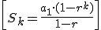
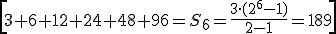
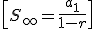
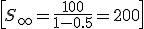

Para sumar los k términos de una progresión geométrica, usamos la fórmula:

Por ejemplo, si queremos sumar

Si |r|< 1, podemos sumar los infinitos términos de la progresión con la fórmula:

Por ejemplo: 100, 50, 25, …

Ejercicios
1.- Calcula:
a) S6 si an = 2n
b) S5 si an = 3, 9, 27, 81,...
c) S∞ si an = 2-n
2.- Juan compró 10 libros y pagó 1€ por el primero, 2 € por el segundo, 4 € por el tercero, ... ¿Cuánto pagó por todos los libros?
Soluciones: 1.- a) 126; b) 363; c) 1;
2.- Pagó 1023 €